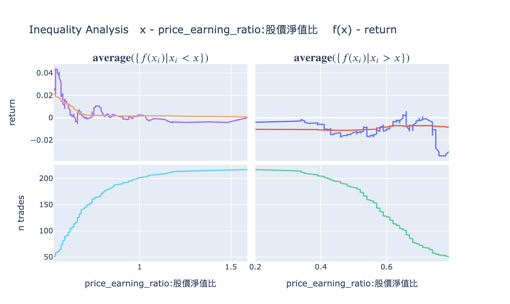

Strategy Analysis Modules
After backtesting, looking only at the cumulative return curve and Sharpe ratio may not be comprehensive enough. The finlab.analysis module provides 6 built-in analysis tools that evaluate strategy quality from multiple angles including liquidity risk, volatility characteristics, and period stability, helping you make more informed trading decisions.
Overview
FinLab includes the following 6 analysis modules:
| Module | Purpose | Use Case |
|---|---|---|
| LiquidityAnalysis | Liquidity risk assessment | Large capital strategies, low-liquidity assets |
| MaeMfeAnalysis | Volatility analysis (MAE/MFE) | Optimizing stop-loss/take-profit, understanding strategy characteristics |
| PeriodStatsAnalysis | Period stability analysis | Reviewing yearly, monthly, and recent performance |
| InequalityAnalysis | Inequality factor analysis | Checking if strategy relies on specific stocks |
| AlphaBetaAnalysis | Alpha/Beta analysis | Measuring excess return and market correlation |
| DrawdownAnalysis | Drawdown analysis | Understanding max drawdown timing and magnitude |
Basic Usage
All analysis modules use the same calling convention:
from finlab import data
from finlab.backtest import sim
# Complete backtest
close = data.get('price:收盤價')
position = close > close.average(20)
report = sim(position, resample='M')
# Run analysis - Method 1: Using module name (string)
report.run_analysis('LiquidityAnalysis', required_volume=100000)
# Run analysis - Method 2: Using module instance
from finlab.analysis.liquidityAnalysis import LiquidityAnalysis
report.run_analysis(LiquidityAnalysis(required_volume=100000))
Method 1 is recommended
Passing the module name as a string is more concise, and FinLab handles module loading automatically.
1. LiquidityAnalysis - Liquidity Risk Assessment
Description
Detects whether the strategy encounters liquidity issues during entry/exit, including:
- Insufficient volume: Daily trading volume below requirements
- Insufficient turnover: Daily trading value below requirements
- Price limits: Buying at upper limit or selling at lower limit (unable to execute)
- Alert/Disposition/Full-delivery stocks: High-risk securities with trading restrictions
Parameters
LiquidityAnalysis(
required_volume=200000, # Required daily trading volume (default: 200,000 shares)
required_turnover=1000000 # Required daily turnover (default: 1,000,000)
)
Usage Example

Interpreting Output
The table shows the probability of each risk item occurring at entry and exit:
| Risk Item | entry | exit | Description |
|---|---|---|---|
| buy_high | 5.2% | 1.3% | Percentage of trades buying at or near the upper price limit |
| sell_low | 0.8% | 4.5% | Percentage of trades selling at or near the lower price limit |
| low_volume_stocks | 12.1% | 10.3% | Percentage of trades with insufficient volume |
| low_turnover_stocks | 8.7% | 7.2% | Percentage of trades with insufficient turnover |
| Alert stocks | 2.1% | 1.8% | Percentage of trades involving alert stocks |
| Disposition stocks | 0.5% | 0.3% | Percentage of trades involving disposition stocks |
| Full-delivery stocks | 0.2% | 0.1% | Percentage of trades involving full-delivery stocks |
Risk threshold suggestions
buy_highorsell_low> 10%: Orders may not execute smoothlylow_volume_stocks> 20%: Large capital may not fully deployDisposition stocks> 5%: Strategy may be targeting high-risk securities
Decision Recommendations
- Insufficient liquidity: Add screening conditions (e.g., "volume > 1000 lots")
- Frequent price limit hits: Adjust entry/exit timing (e.g., use open price instead of close)
- Too many alert/disposition stocks: Add risk control conditions to exclude high-risk securities
2. MaeMfeAnalysis - Volatility Analysis
Description
MAE/MFE analysis is the core tool for optimizing stop-loss/take-profit:
- MAE (Maximum Adverse Excursion): Maximum adverse movement during holding period (max loss)
- BMFE (Before-MAE MFE): Maximum favorable movement before MAE occurred
- GMFE (Global MFE): Maximum favorable movement during holding period (max profit)
- MDD (Maximum Drawdown): Maximum drawdown during holding period
Through 12 subplots, gain a comprehensive understanding of each trade's volatility characteristics.
Parameters
MaeMfeAnalysis(
violinmode='group', # Violin plot mode: 'group' or 'overlay'
mfe_scatter_x='mae' # MFE scatter plot X-axis: 'mae' or 'return'
)
Usage Example
# Method 1: Using the display_mae_mfe_analysis() shortcut
report.display_mae_mfe_analysis()
# Method 2: Using run_analysis()
report.run_analysis('MaeMfeAnalysis', violinmode='group')

12 Subplot Descriptions
Row 1
- Win Ratio: Trade win rate distribution (profit vs loss histogram)
- Blue: profitable trades, Pink: losing trades
-
Green dashed line: average return
-
Edge Ratio: MFE/MAE ratio at different holding periods
- Value > 1 means profit magnitude exceeds loss magnitude
-
Observe the strategy's "edge time window"
-
MAE vs Return: Relationship between MAE and final return
- Horizontal dashed line: MAE 75th percentile (Q3)
- Used for setting stop-loss points
Row 2
- GMFE vs MAE: Maximum profit vs maximum loss
- Q3 dashed lines: Range of 75% of trades' GMFE and MAE
-
Used for evaluating take-profit potential
-
BMFE vs MAE: Maximum profit before MAE occurred
- Higher values mean more opportunity to take profit before stop-loss triggers
-
Used for optimizing "trailing stop" strategies
-
MDD vs GMFE: Maximum drawdown vs maximum profit
- Orange line: MDD = GMFE baseline
- Points below: GMFE > MDD (good signal, trailing stop viable)
- Points above: MDD > GMFE (bad signal, missing profits)
Row 3
7-9. MAE/BMFE/GMFE Distribution: Distribution and density of each metric - Histogram + density curve - Blue: profitable trades, Pink: losing trades - Q3 dashed line: 75th percentile
Row 4
- Indices Stats (Violin Plot): Statistical distribution of 6 key metrics
- return, mae, bmfe, gmfe, mdd, pdays_ratio
- group mode: Shows profit/loss trade differences separately (recommended)
- overlay mode: All trades overlaid
Decision Recommendations
Optimize stop-loss/take-profit based on MAE/MFE analysis:
Setting Stop-Loss
# 1. Check MAE 75th percentile (Q3)
trades = report.get_trades()
mae_q3 = trades['mae'].quantile(0.75) # e.g., -8.5%
# 2. Set stop-loss slightly wider than Q3 to avoid over-stopping
stop_loss = abs(mae_q3) * 1.2 # Set to 10%
Setting Take-Profit
# Check GMFE 75th percentile
gmfe_q3 = trades['gmfe'].quantile(0.75) # e.g., 15%
# Set take-profit
take_profit = gmfe_q3 * 0.8 # Set to 12%, ensuring most profits are captured
Trailing Stop Decision
If the "MDD vs GMFE" chart shows:
- Missed Win-profits PCT < 20%: Trailing stop is suitable
- Missed Win-profits PCT > 40%: Trailing stop is not suitable (exits too early, missing larger gains)
# Use trailing stop (via sim()'s trail_stop parameter)
position = position.hold_until(
exit=exits,
stop_loss=0.1
)
report = sim(position, resample='M', trail_stop=0.08) # Exit on 8% pullback
3. PeriodStatsAnalysis - Period Stability Analysis
Description
Analyzes strategy performance across different periods (yearly, monthly, recent) and compares with a benchmark to verify stability.
Usage Example
Interpreting Output
Produces multiple tables including:
1. Overall Stats
Compares strategy vs benchmark on daily, monthly, and yearly metrics:
| Metric | benchmark | strategy |
|---|---|---|
overall_daily / calmar_ratio |
0.149 | 0.066 |
overall_daily / sharpe_ratio |
0.532 | 0.306 |
overall_monthly / return |
0.084 | 0.048 |
2. Yearly Stats
Heatmap showing 7 metrics per year (calmar_ratio, sharpe_ratio, return, volatility, etc.).
3. Recent Stats
Shows performance for M (month), Q (quarter), HY (half-year), Y (year), 3Y (three years).
Decision Recommendations
- Strategy sharpe_ratio < benchmark: Risk-adjusted return is worse than the market; improvement needed
- Some years perform very poorly: Check if specific market conditions were encountered (e.g., bear market)
- Recent performance significantly declined: Strategy may be failing; re-optimization needed
4. InequalityAnalysis - Inequality Factor Analysis
Description
Checks whether strategy returns are overly concentrated in a few stocks, evaluating strategy robustness.

Usage Example
Interpreting Output
Produces two charts:
- Cumulative Returns by Stock: Cumulative contribution curve by stock
-
If the curve reaches 80% within the top 10% of stocks, returns are overly concentrated
-
Gini Coefficient: Gini coefficient (0-1)
- Close to 0: Returns are evenly distributed (good)
- Close to 1: Returns are extremely concentrated (high risk)
Decision Recommendations
- Gini > 0.7: Strategy is overly dependent on a few stocks; diversification needed
- Top 5% stocks contribute > 50% of returns: Remove these stocks and test strategy robustness
5. AlphaBetaAnalysis - Alpha/Beta Analysis
Description
Measures strategy performance relative to a benchmark index:
- Alpha: Excess return (the strategy's unique value)
- Beta: Market sensitivity (correlation with the market)
Usage Example
Interpreting Output
Shows three sections:
-
Overall Summary -- Alpha and Beta overview:
Metric Value Description Alpha 5.00% Annualized excess return (true contribution after removing market risk) Beta 0.80 Market sensitivity (market up 1%, strategy expected up 0.8%) -
Yearly Alpha/Beta -- Annual Alpha and Beta breakdown to observe strategy stability
-
Recent Alpha/Beta -- Performance for full period, recent 1M, 3M, 6M, 1Y
To get raw data (dict):
result = report.run_analysis('AlphaBetaAnalysis', display=False)
# result['overall'] -> {'alpha': 0.05, 'beta': 0.8}
# result['yearly'] -> {'alpha': [...], 'beta': [...], 'year': [...]}
# result['recent'] -> {'alpha': [...], 'beta': [...], 'ndays': [...]}
Decision Recommendations
- Alpha > 0: Strategy has excess returns; worth executing
- Alpha < 0: Strategy underperforms the benchmark; improvement needed
- Beta > 1.5: Strategy volatility is extremely high; high risk
- Beta < 0: Strategy is negatively correlated with the market (suitable for hedging)
6. DrawdownAnalysis - Drawdown Analysis
Description
Detailed analysis of all drawdown events:
- Maximum drawdown magnitude and timing
- Average drawdown magnitude
- Drawdown duration
Usage Example
Interpreting Output
Produces tables and charts:
- Drawdown Events Table: Detailed information for all drawdown events
- start_date: Drawdown start date
- end_date: Drawdown end date
- duration: Duration in days
-
max_dd: Maximum drawdown magnitude
-
Drawdown Plot: Drawdown time series chart
Decision Recommendations
- Max drawdown > -50%: Risk is too high; additional risk controls needed
- Drawdown duration > 1 year: Strategy may be ineffective long-term
- Frequent recent drawdowns: Market conditions may have changed; re-evaluate strategy
Custom Analysis Modules
If built-in analysis is insufficient, you can inherit the Analysis class to develop custom analysis.
Basic Example: Industry Analysis
Analyze the industry of each trade:
from finlab import data
from finlab.analysis import Analysis
class IndustryAnalysis(Analysis):
def calculate_trade_info(self, report):
"""Calculate industry information for each trade"""
industry = data.get('etl:industry')
return [
['Industry', industry, 'entry_sig_date']
]
def analyze(self, report):
"""Analyze industry distribution"""
trades = report.get_trades()
industry_return = trades.groupby('Industry@entry_sig_date')['return'].agg(['count', 'mean'])
self.result = industry_return.sort_values('mean', ascending=False)
return self.result.to_dict()
def display(self):
"""Display analysis results"""
return self.result
# Use custom analysis
report.run_analysis(IndustryAnalysis())
Advanced Example: Monthly Win Rate Analysis
Analyze whether win rates differ by month:
class MonthlyWinRateAnalysis(Analysis):
def analyze(self, report):
trades = report.get_trades()
trades['entry_month'] = pd.to_datetime(trades['entry_date']).dt.month
monthly_stats = trades.groupby('entry_month').agg({
'return': ['count', lambda x: (x > 0).mean(), 'mean']
}).round(3)
monthly_stats.columns = ['Trade Count', 'Win Rate', 'Average Return']
self.result = monthly_stats
return self.result.to_dict()
def display(self):
import plotly.express as px
fig = px.bar(self.result, y='Win Rate', title='Monthly Win Rate Analysis')
return fig
# Usage
report.run_analysis(MonthlyWinRateAnalysis())
Analysis Class API
When inheriting the Analysis class, you can override the following methods:
class Analysis:
def is_market_supported(self, market):
"""Check if the market is supported
Returns:
bool: True if supported, False otherwise
"""
return True
def calculate_trade_info(self, report):
"""Calculate additional trade information
Returns:
list: Format is [[field_name, data DataFrame, date column used], ...]
Examples:
return [
['Industry', industry_data, 'entry_sig_date'],
['Market Cap', market_cap, 'entry_date']
]
"""
return []
def analyze(self, report):
"""Execute analysis logic
Args:
report: Backtest report object
Returns:
dict: Analysis results (for cloud upload)
"""
pass
def display(self):
"""Display analysis results
Returns:
Visualization object (Plotly Figure or Pandas Styler recommended)
"""
pass
Purpose of calculate_trade_info
calculate_trade_info() executes before analyze(), automatically adding additional information to the report.get_trades() DataFrame.
For example, returning [['Industry', industry, 'entry_sig_date']] adds an 'Industry@entry_sig_date' column to trades.
Combining Multiple Analysis Modules
In practice, running multiple analyses simultaneously is recommended:
from finlab import data
from finlab.backtest import sim
# Complete backtest
close = data.get('price:收盤價')
position = close > close.average(20)
report = sim(position, resample='M')
# 1. Liquidity assessment
report.run_analysis('LiquidityAnalysis', required_volume=100000)
# 2. Volatility analysis
report.display_mae_mfe_analysis()
# 3. Period stability analysis
report.run_analysis('PeriodStatsAnalysis')
# 4. Alpha/Beta analysis
report.run_analysis('AlphaBetaAnalysis')
# 5. Custom industry analysis
report.run_analysis(IndustryAnalysis())
Best Practices
1. Standard Analysis Workflow
After each strategy backtest, the following checks are recommended:
# Step 1: Basic performance review
report.display()
# Step 2: Liquidity risk (must-check for large capital)
if capital > 1000000:
report.run_analysis('LiquidityAnalysis', required_volume=100000)
# Step 3: Volatility analysis (must-do, for optimizing stop-loss/take-profit)
report.display_mae_mfe_analysis()
# Step 4: Period stability (check long-term stability)
report.run_analysis('PeriodStatsAnalysis')
# Step 5: Alpha/Beta (check for excess return)
report.run_analysis('AlphaBetaAnalysis')
2. Analysis Focus by Strategy Type
| Strategy Type | Key Analysis Module |
|---|---|
| Short-term trading (intraday, weekly) | MaeMfeAnalysis (optimize stop-loss/take-profit) |
| Long-term investing (monthly, quarterly) | PeriodStatsAnalysis (check long-term stability) |
| Large capital strategies (> 10M) | LiquidityAnalysis (avoid liquidity risk) |
| Market neutral strategies | AlphaBetaAnalysis (confirm Beta close to 0) |
| High-frequency trading | DrawdownAnalysis (confirm drawdowns are manageable) |
3. Analysis Result Decision Tree
Backtest Complete
+- Liquidity risk > 20%?
| +- Yes -> Add volume screening conditions
| +- No -> Continue
+- Sharpe ratio < 1?
| +- Yes -> Optimize screening conditions or stop-loss/take-profit
| +- No -> Continue
+- Max drawdown > -30%?
| +- Yes -> Add risk controls (stop-loss, position sizing)
| +- No -> Continue
+- Alpha < 0?
| +- Yes -> Strategy has no excess return; needs redesign
| +- No -> Continue
+- All checks passed -> Proceed to out-of-sample testing